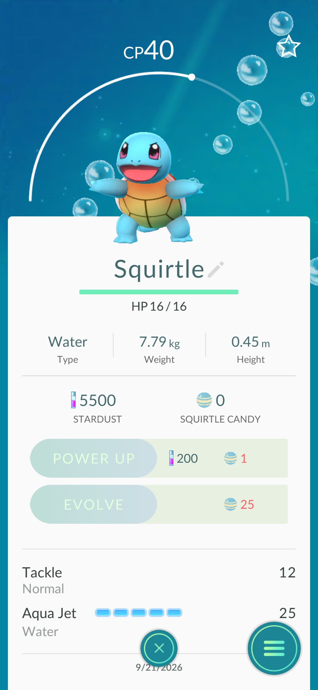
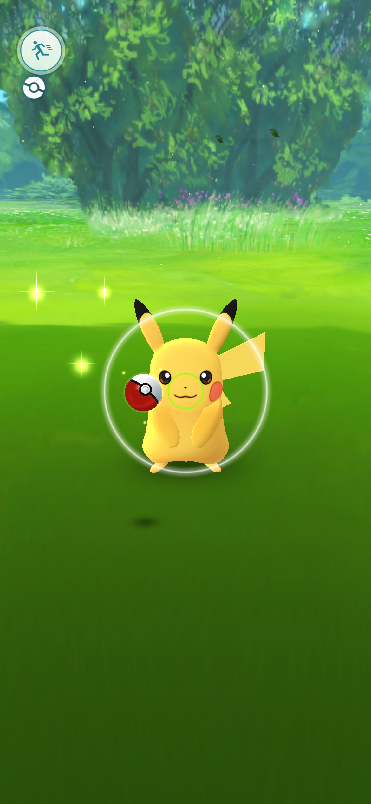
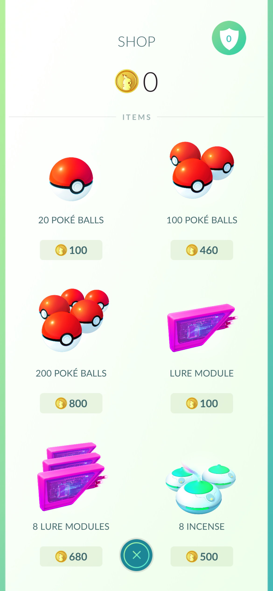
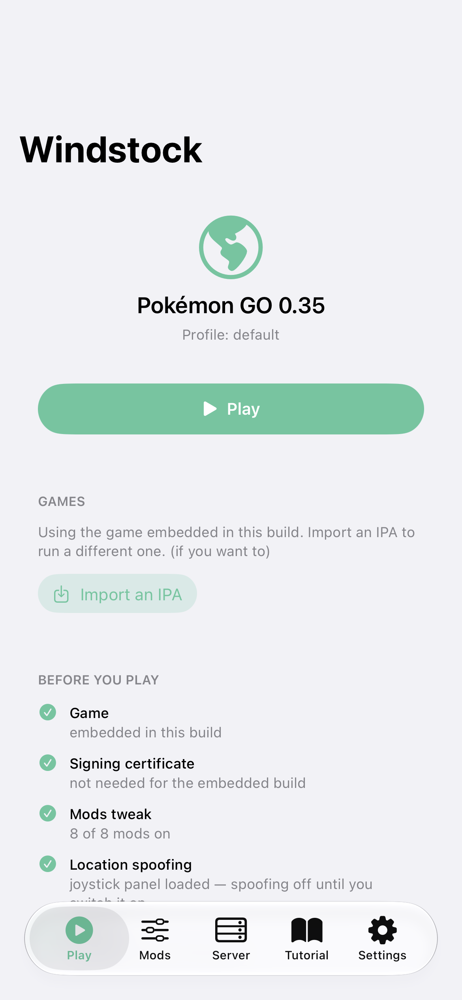

01 / 06
Wild Pokémon match the terrain.
Real biomes from OpenStreetMap — water, woods, city streets — lean toward their own types. Not gated by a paid “scanner”.
Open source · GPLv3 · July 2016, rediscovered
Windstock is a from-scratch, self-hosted Pokémon GO 0.29 server. Log in from the game with any name and any password, keep the world on your own PC, and play the original — no Discord sign-in, no 18+ card counting, no supporter plans.
What actually works, listed
Everything below is running in the server right now — we're not going to describe features we haven't built. The one honest caveat lives at the bottom, because open source means telling the truth.




Real biomes from OpenStreetMap — water, woods, city streets — lean toward their own types. Not gated by a paid “scanner”.
No third-party login, no “you must sign in with Discord first”, no age gate. Type a trainer name, walk out the door.
Nests shift over time. The corner you like stays yours — no reservation fee, no “limited to 151” places.
Eggs hatch by real distance: one unlimited incubator, plus 3-use basic ones, just like 2016. Hatching has never required a subscription.
Deploy, train prestige, take gyms, hold them for the defender bonus. 2016 type matchups. The coins are in-game, earned by the game.
There is an in-game shop, and it sells items for coins you earn by playing. That’s the entire business model. There is nothing on this server that costs a card.
The Windstock promise
This is a built-from-scratch server — the exact 0.29 protocol, reverse-engineered to the field number, answered request by request. GPLv3, public source, and self-hosted: your world, your data, your machine. Nobody here is quietly “keeping the servers funded”.
Be nice.
This is a world we share.
Read the code.
Everything is GPLv3 on GitHub. Believing is for the other guy.
Progress follows you.
Saves are files on disk. Back them up, move them, own them.
Our supporter plans (all of them)
Kanto.ac sells Pikachu at £5.99/mo, Charizard at £11.99/mo, and Mew at £79.98 one-time — “limited to 151” places. We checked their price list so you don’t have to. Ours is printed in full below.
Scanner range: the entire real map, always on.
Storage: the bag the game shipped with, never unlocked by wire.
Same name, no monthly reminder to cancel.
1 km scanner at Kanto: “Shiny Charm while subscribed”.
At Windstock: the same map, no charm, no expiry date.
We would never know how to hide spawns behind a tier.
“A place in Kanto, forever” — for £79.98, once.
Our world has no numbered seats. Everyone gets one.
Measure once, free forever. Or, you know, just free forever.
The honesty clause: “as shown on kanto.ac”. Their prices, their limits, their choice. We only borrowed the names for the joke; we won’t be taking the payments.
| Kanto.ac | Windstock | |
|---|---|---|
| Signing in | Discord login required to play | any name, any password |
| Age | 18 or over only | be a trainer |
| Catch rules | “2016. Harder catches.” | 2016 catch physics, throw scoring, curveballs, berries |
| Supporter plans | £5.99 / £11.99 / £79.98 + LootLabs tasks | £0.00 / £0.00 / £0.00 |
| Scanner | 500 m or 1 km while subscribed | the whole map, no subscription |
| Storage | +100 / +200 / +500 slots, sold separately | never sold, never had a price |
| Setup | launcher/browser patcher; iPhone needs Apple-ID sideload | open-source APK patcher (strips cert pinning); stock iOS client over Tailscale |
| Your world | progress “stays on the server” | progress is a file on a machine you choose; copies are free |
| Source code | a price list | GPLv3 on GitHub, all of it |
* We host a free world and a free joke. The only thing either Kanto-line on this page bills is a laugh.
Receipts · sent, not forged
When their proprietary translation layer was ripped out of an APK, an operator of the paid Kanto server messaged a trainer this — verbatim, unretouched, quoted in full. We frame it so nobody ever misses the point again:
Received shortly after the APK extraction. Their spelling, their tone, their choice:
You've made ur mind up, you've ruined your reputation And I never want to speak with you ever again. Either get some mental health help, or off yourself before you're 18 Either option I don't care
That is how a server whose tagline is "always free to play, supporting is optional" talks to criticism. We couldn't write a worse advert for them ourselves, so we let them. Kanto: not the good guys.
The honest part we promised
Open source means we tell you what doesn’t work: gym defender counter-attacks don’t animate, and 3D models need genuine 2016 asset bundles (until then, the client’s 2D icons). That level of disclosure is also free. Project Windstock is GPLv3 — the code is public, your server can be your own, and the world stays free forever.
See if the world is onlinewe’re not Kanto. Free forever! — happy catching, go catch ’em all!